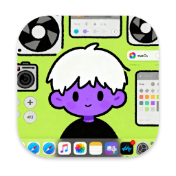

0 元
核心功能使用成本

可遇录屏 keyusee 正在加载...
完全免费 · Focusee 平替 · Electron 桌面应用
Focusee 平替，可遇录屏（keyusee）面向教程录制、产品演示、Bug 复现和远程协作场景，提供录制、剪辑、AI 着重、画中画讲解、3D 变换与导出的一体化流程。当前核心功能长期免费开放，无订阅、无导出水印。
本项目已开源，欢迎查看源码与参与共建。
核心功能使用成本
核心模块
典型使用场景
可遇录屏 keyusee · 录制与剪辑一体化
推荐工作流
当前版本功能全景
软件展示
快速了解软件界面和操作逻辑
市场需求与痛点分析
在教程创作、产品交付、售前演示与远程协作中，常见痛点是录制和后期割裂、重点不突出、沟通效率低。可遇录屏（keyusee） 把关键步骤集中在一个界面里完成。